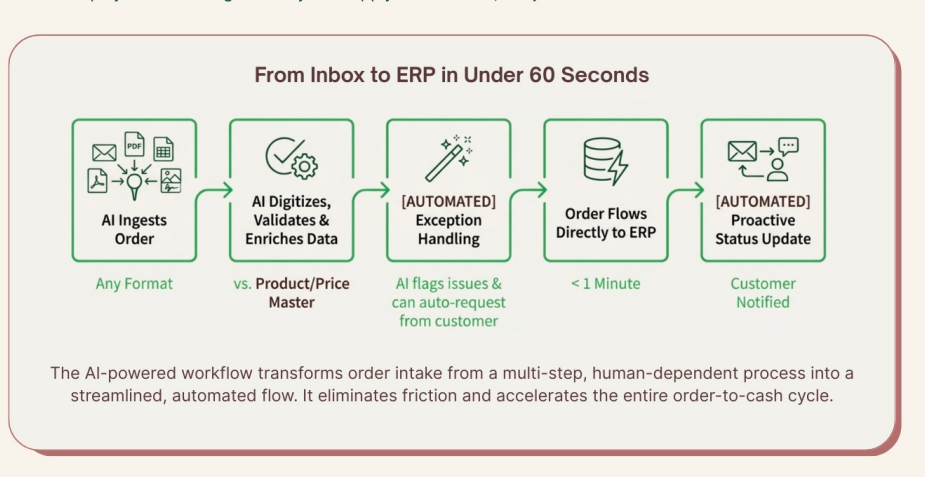

An AI agent that watches a shared inbox, understands orders in any format — PDF, spreadsheet, XML, free text — matches line items to the catalog, writes a clean sales order, and replies to the customer. Ambiguous orders get routed to a human, never guessed at.
